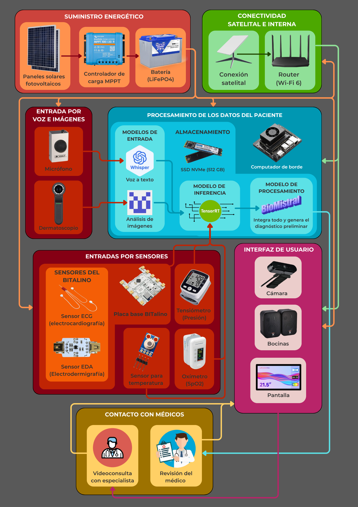
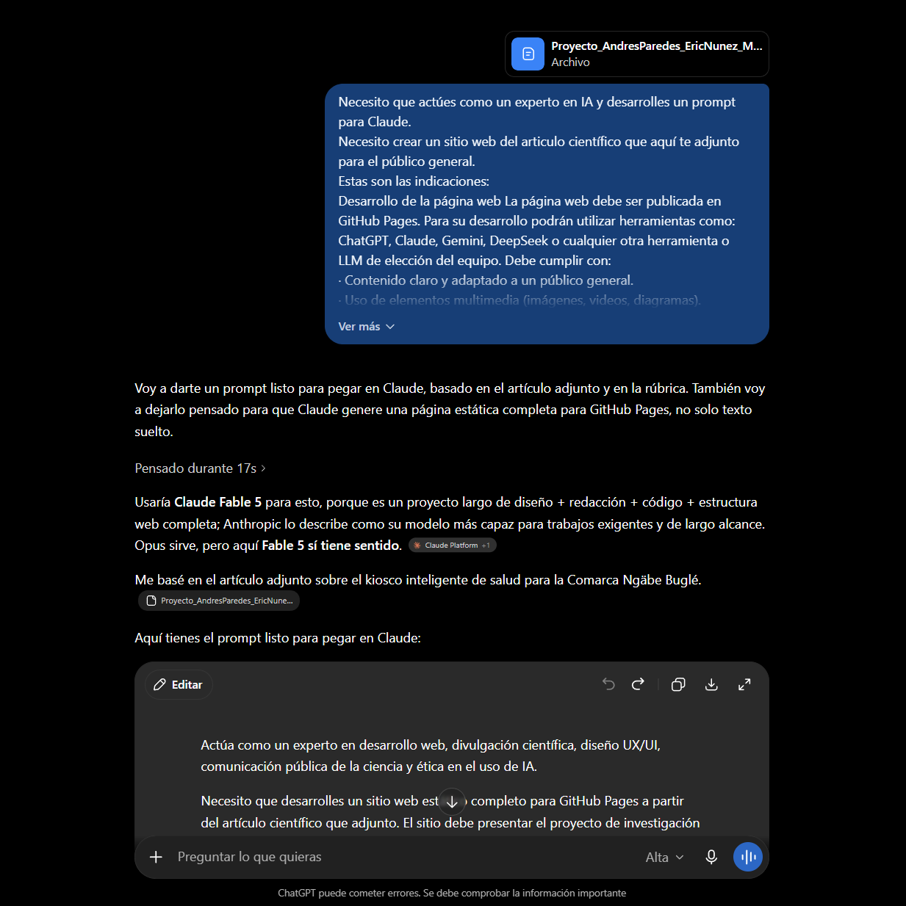
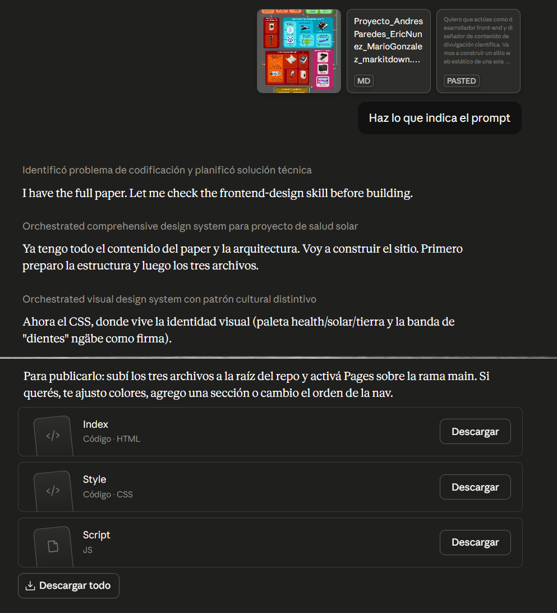

Suministro energético
Paneles solares, controlador de carga y baterías de litio-hierro-fosfato mantienen el kiosco encendido sin red eléctrica.
Propuesta universitaria · Comarca Ngäbe Buglé, Panamá
En muchas comunidades de la comarca, llegar a un centro de salud puede tomar horas o incluso días. Este proyecto propone un kiosco autónomo que mide signos vitales, escucha los síntomas del paciente y ofrece una orientación clínica preliminar, con energía solar y conexión satelital.
Es una propuesta de diseño, no un producto terminado. Apoya la detección temprana y sirve de puente hacia el personal médico. No reemplaza al médico ni entrega un diagnóstico definitivo.
01 · El contexto
La Comarca Ngäbe Buglé enfrenta barreras geográficas, económicas, de personal médico y de infraestructura que dificultan la prevención y el diagnóstico temprano. Estos son algunos datos que dan forma al problema.
Llegar a un centro de salud puede implicar caminar, ir a caballo o pagar transporte durante varias horas, y a veces días. Para una familia, ese viaje representa un gasto difícil de sostener y, muchas veces, la razón por la que una consulta se posterga hasta que ya es urgente.
La escasez de personal y la infraestructura limitada completan el cuadro: cuando hay pocos profesionales disponibles y las distancias son largas, las señales tempranas de una enfermedad tienden a pasar desapercibidas. Frente a eso, este proyecto plantea un apoyo complementario para la orientación clínica inicial y la detección temprana, pensado siempre como un puente hacia el criterio médico, no como su reemplazo.
02 · La solución propuesta
La idea central es reunir en una sola unidad todo lo necesario para una primera valoración: sensores, captura de voz e imagen, procesamiento local y un enlace satelital para hablar con un médico cuando el caso lo requiere. En la práctica, el kiosco puede:
Paneles solares, controlador de carga y baterías de litio-hierro-fosfato mantienen el kiosco encendido sin red eléctrica.
Un terminal Starlink y una red interna Wi-Fi 6 habilitan videoconsultas y comunicación remota donde no hay señal celular.
Un computador de borde de bajo consumo ejecuta localmente los modelos y guarda el historial clínico cifrado.
Sensores biométricos, un dermatoscopio y un micrófono recogen signos vitales, imágenes y la descripción del paciente.
Pantalla táctil grande, altavoces y cámara frontal, pensados para personas con poca experiencia previa en dispositivos digitales.
Modelos de lenguaje y de visión que analizan síntomas, clasifican imágenes de piel y transcriben la voz.
03 · Marco teórico
Cada decisión del proyecto se apoya en investigaciones previas. Estas son las cinco bases conceptuales detrás del kiosco.
Los modelos de lenguaje de gran escala pueden leer los síntomas descritos por una persona y ofrecer una orientación coherente con criterios clínicos. Ayudan a interpretar lo que el paciente cuenta, pero pueden equivocarse o inventar información, por lo que se usan como apoyo bajo supervisión y nunca como sustituto del médico.
Miden de forma no invasiva señales del cuerpo como temperatura, oxígeno en sangre, frecuencia cardíaca, presión y respiración. Aportan datos objetivos que complementan lo que el paciente describe con palabras, y ayudan a detectar señales de alerta tempranas.
Son unidades autónomas que el propio usuario puede operar para recibir una orientación preliminar sin un médico presente. Ya existen experiencias en comunidades rurales, como un kiosco solar desplegado sin red eléctrica y otro de manejo nutricional que obtuvo una excelente calificación de usabilidad (89,17 sobre 100).
La telemedicina lleva la atención a personas alejadas de los centros de salud. En zonas sin infraestructura terrestre, la conexión satelital de baja latencia de Starlink permite sostener videoconsultas en tiempo real y activar protocolos de emergencia con médicos a distancia.
En comunidades donde la red eléctrica es inexistente o inestable, la energía solar deja de ser un accesorio y se vuelve parte estructural del diseño. Paneles fotovoltaicos, un controlador con seguimiento del punto de máxima potencia (MPPT) y baterías LiFePO4 permiten mantener el sistema funcionando incluso en aislamiento.
04 · Metodología y materiales
El trabajo es de tipo documental o bibliográfico y de alcance descriptivo. No hubo implementación física ni validación en campo: la investigación caracteriza el problema y, a partir de ahí, propone una solución en el plano del diseño, sustentada en artículos científicos, reportes técnicos y fichas de componentes.
Revisión inicial del estado de la salud pública en zonas de difícil acceso, a partir de reportes oficiales y del contexto de la comarca.
Búsqueda en IEEE Xplore, Google Scholar, arXiv y PubMed, con prioridad en fuentes revisadas por pares y fichas técnicas oficiales.
Evaluación de alternativas para cada componente según autonomía energética, operación con conectividad limitada y contexto rural.
Integración de los seis subsistemas en una arquitectura coherente, pendiente de implementación física y validación.
Toca cada bloque para ver los componentes principales.
05 · Diseño y flujo
Así viaja la información dentro del kiosco, desde que el paciente se acerca hasta que recibe una orientación preliminar. Ninguna etapa entrega un diagnóstico definitivo: el sistema reúne señales y las presenta como apoyo.

Los sensores biométricos capturan los signos vitales del paciente y los envían al computador de borde.
El paciente describe sus síntomas por voz a través del micrófono.
Whisper transcribe ese audio a texto en español.
Si hay una posible lesión en la piel, el dermatoscopio toma la imagen y EfficientNet-B4 genera una etiqueta textual de apoyo.
Si se reporta un problema ocular, la imagen se conserva como apoyo visual para la revisión médica remota, sin clasificarla de forma automática.
BioMistral-7B integra los síntomas transcritos, los signos vitales y, cuando aplica, la etiqueta del modelo de visión.
El sistema genera una orientación clínica preliminar.
El resultado se muestra en pantalla y se reproduce por audio para el paciente.
Si el caso es crítico o requiere revisión médica, se activa una videoconsulta mediante Starlink.
El historial clínico se guarda de forma local y cifrada en el SSD del sistema.
Nota importante: el kiosco no diagnostica de forma definitiva. Ofrece una orientación preliminar, apoya el diagnóstico temprano, ayuda a la detección de señales de alerta y funciona como herramienta complementaria del personal de salud.
06 · Comparativa de tecnologías
Cada componente clave se seleccionó bajo tres criterios: autonomía energética, operación con conectividad intermitente y prudencia clínica. Estas son las decisiones principales.
Ofrecen entre 2.000 y 6.000 ciclos de carga frente a los 300 a 500 del plomo-ácido, con una vida útil de 10 a 15 años en lugar de 3 a 5. Requieren menos mantenimiento y toleran mejor el clima cálido y húmedo de la zona.
Su órbita baja da una latencia de 25 a 50 ms, frente a los 600 a 684 ms de los sistemas geoestacionarios. Además, no depende de infraestructura celular, inexistente en la comarca.
Opera entre 7 y 25 W, muchísimo menos que un mini-PC con GPU (150 a 350 W), y ofrece hasta 67 TOPS. La Raspberry Pi, sin GPU dedicada, no alcanza tiempos de respuesta aceptables.
Tiene evaluación multilingüe documentada que incluye el español y admite ejecución local en versión cuantizada, lo que reduce la dependencia de una conexión permanente a internet.
Alcanza 82,9% de precisión top-1 en ImageNet con 19 millones de parámetros, frente al 75,2% de MobileNetV3-Large con 5,4 millones. Se priorizó la precisión para reducir falsos negativos, aunque con mayor peso computacional.
Funciona sin conexión y ofrece soporte nativo para el español, algo incompatible con servicios que exigen internet permanente.
Aprovecha la GPU NVIDIA del Jetson mediante aceleración CUDA. Aun así, su ventaja concreta depende de la compatibilidad con el modelo y el formato de cuantización, algo que debe verificarse en la implementación.
Concentra las principales librerías del proyecto y reduce el tiempo de integración. El cuello de botella real es la inferencia de los modelos, que ya se acelera por GPU.
BITalino, MLX90614, el módulo de presión, el oxímetro y el dermatoscopio se eligieron por su relación costo-fiabilidad, pero todos requieren calibración y validación frente a equipos de referencia antes de cualquier uso clínico real.
07 · Costos y viabilidad
Los precios son referenciales, consultados en junio de 2026, y no constituyen una cotización formal. No incluyen instalación, logística, mantenimiento, capacitación ni validación clínica.
El estudio no calculó un retorno de inversión formal, así que la respuesta corta es que todavía no hay una cifra de rentabilidad confirmada. Dicho esto, si se compara el costo total estimado (≈3.623 USD) con lo que ya le cuesta a una familia cada viaje a un centro de salud (B/. 80,00), la inversión equivaldría, en números simples, a unos 45 traslados evitados. Para una comunidad, ese número se alcanza rápido. Esa cuenta no incluye el gasto recurrente de Starlink (≈600 USD al año) ni los costos de instalación, mantenimiento o capacitación, que también deben pesar en cualquier análisis real de rentabilidad.
08 · Hasta dónde llega la propuesta
Ser honestos sobre los límites es parte del trabajo. Esto es lo que este proyecto todavía no resuelve y lo que debería venir después.
09 · Forma de trabajo del grupo
El equipo trabajó de forma colaborativa durante todo el desarrollo. Se organizaban en llamadas y usaban la edición simultánea de Word, lo que permitió que varios integrantes escribieran sobre el mismo documento al mismo tiempo. Aunque cada uno lideró ciertas secciones, la redacción y la corrección fueron un proceso conjunto: todos aportaron, revisaron y corrigieron el trabajo de sus compañeros.
Introducción (Justificación, Objetivo, Delimitación), Marco Teórico, Costos, Resumen. Metodología en conjunto.
Este proyecto me ayudó a entender la importancia de desarrollar tecnología con un propósito social. Investigar la realidad de las comunidades rurales y sus dificultades para acceder a la salud me hizo valorar cómo la tecnología puede reducir esas brechas cuando se diseña pensando en las necesidades reales de las personas. Además, el proceso de investigación y redacción fortaleció habilidades que serán muy útiles en mi formación profesional.
Introducción (Problemática, Antecedentes), Conclusiones, Palabras Clave. Metodología en conjunto.
Durante este trabajo comprendí que una buena propuesta tecnológica necesita estar respaldada por evidencia e investigación sólida. Analizar tecnologías, comparar alternativas y justificar cada decisión me permitió entender mejor cómo se construye un proyecto con bases científicas. También reforzó la importancia del trabajo en equipo para integrar distintas ideas en un resultado más completo.
Diseño del sistema y Comparativa de Tecnologías. Metodología en conjunto.
Elaborar este artículo me ayudó a ver que la innovación no consiste solo en crear tecnologías nuevas, sino en usarlas para resolver problemas reales. Investigar sobre el acceso a la salud en comunidades de difícil acceso me permitió conocer una realidad que muchas veces pasa desapercibida y fortaleció tanto mis conocimientos técnicos como mi capacidad para investigar y comunicar ideas con claridad.
10 · Uso ético de LLMs y herramientas generativas
Durante el desarrollo se emplearon herramientas generativas como apoyo, nunca como sustituto de la revisión del equipo. Toda la información se revisó, corrigió y contrastó antes de integrarla al documento.
Espacios reservados para capturas reales de los prompts y las iteraciones.


Quiero que actúes como desarrollador front-end y diseñador de contenido de divulgación científica. Vamos a construir un sitio web estático de una sola página para presentar un proyecto universitario a un público general, no especializado. El sitio será publicado en GitHub Pages, así que debe funcionar únicamente con HTML, CSS y JavaScript. No uses backend, frameworks con proceso de build ni dependencias que impidan abrir el sitio directamente desde un repositorio. Puedes usar CDN solo si realmente aporta algo y si el sitio sigue siendo fácil de desplegar. Te adjunto dos materiales de referencia: 1. Un artículo científico en formato markdown, con el contenido completo del proyecto. 2. Una imagen con el diseño propuesto / arquitectura del sistema. Usa ambos materiales como fuente principal. No copies el texto del artículo tal cual. Debes resumir, reorganizar y explicar la información de forma clara, visual y entendible para personas sin conocimientos técnicos. Sin embargo, no cambies el significado de las ideas, no inventes resultados, no exageres el alcance del sistema y no presentes la propuesta como si ya hubiera sido implementada o probada físicamente. ## Tema del sitio El proyecto trata sobre una propuesta conceptual de un kiosco de salud inteligente, autónomo y alimentado con energía solar, orientado a apoyar el diagnóstico temprano de enfermedades en comunidades de difícil acceso de la Comarca Ngäbe Buglé, Panamá. El sistema integra: - Sensores biométricos para capturar signos vitales. - Captura de voz y transcripción automática. - Captura de imágenes dermatológicas y, cuando aplique, de superficie ocular. - Modelos de lenguaje de gran escala, especialmente BioMistral-7B, para analizar síntomas y datos clínicos estructurados. - Modelos de visión como EfficientNet-B4 para clasificación dermatológica. - Whisper para transcripción de voz. - Procesamiento local en un Jetson Orin Nano Super. - Conectividad satelital Starlink para videoconsultas y comunicación remota. - Energía solar con baterías LiFePO4 para operar en zonas sin red eléctrica estable. Importante: evita usar el término "IA" como etiqueta general. Donde el documento diga IA, cambia el enfoque a "LLMs", "modelos de lenguaje", "modelos de visión", "modelos de aprendizaje profundo" o "sistemas computacionales", según corresponda. La sección de uso ético también debe llamarse "Uso ético de LLMs y herramientas generativas", no "Uso ético de IA". ## Enfoque de contenido El sitio debe basarse en el orden general del artículo original, pero adaptado a una página web. No es necesario incluir todas las subsecciones del paper de forma literal. Algunas pueden juntarse u omitirse, pero no se deben perder las partes importantes del proyecto. Partes obligatorias que deben aparecer de manera clara: - Contexto del problema en la Comarca Ngäbe Buglé. - Justificación de por qué se propone un kiosco de salud. - Marco teórico, explicado en lenguaje sencillo. - Metodología de la investigación. - Materiales y componentes del sistema. - Diseño propuesto / arquitectura del sistema. - Flujo de funcionamiento de una consulta. - Comparativa de tecnologías. - Costos / costes estimados. - Viabilidad, limitaciones y recomendaciones. - Forma de trabajo del grupo. - Uso ético de LLMs y herramientas generativas. - Créditos y bibliografía breve. ## Estructura sugerida del sitio Crea una página única con navegación por anclas. Usa una estructura similar a esta: ### 1. Portada / Hero Debe incluir: - Título del proyecto. - Una frase breve que explique el problema en lenguaje simple. - Una frase que deje claro que es una propuesta conceptual de apoyo al diagnóstico temprano, no un reemplazo del médico. - Un elemento visual: puede ser un SVG simple del kiosco, una tarjeta destacada o un diagrama pequeño. Ejemplo de enfoque, no copiar literalmente: "Un kiosco solar para acercar orientación médica inicial a comunidades donde llegar a un centro de salud puede tomar horas o días." ### 2. El problema: acceso a salud en comunidades de difícil acceso Esta sección debe combinar, de forma resumida y entendible, la problemática, antecedentes, justificación, objetivo y delimitación del artículo. Debe explicar: - Que en la Comarca Ngäbe Buglé existen barreras geográficas, económicas, de personal médico e infraestructura. - Que llegar a un centro de salud puede implicar varias horas o días de traslado. - Que el traslado puede representar un costo promedio cercano a B/. 80,00 por paciente, según el documento. - Que la comarca cuenta con baja disponibilidad de personal de salud: aproximadamente 3,3 médicos y enfermeras por cada 10.000 habitantes, muy por debajo de la recomendación de 25 para zonas de difícil acceso. - Que entre 2018 y 2022 la mortalidad general se mantuvo elevada, entre 302,9 y 348,8 por cada 100.000 habitantes. - Que el sistema se propone como apoyo complementario para orientación clínica preliminar y detección temprana, no como sustituto del criterio médico. Usa lenguaje humano y claro. No conviertas esta sección en un bloque académico largo. Puedes usar tarjetas, datos destacados o una mini línea de tiempo del problema. ### 3. La propuesta: un kiosco de salud autónomo Debe presentar la solución de forma visual. Explica que el proyecto propone un kiosco capaz de: - Medir signos vitales. - Escuchar los síntomas del paciente. - Transcribir la voz a texto. - Tomar imágenes dermatológicas cuando sea necesario. - Procesar la información localmente. - Generar una orientación preliminar. - Conectar al paciente con personal médico remoto mediante Starlink si el caso lo requiere. - Funcionar con energía solar. Incluye una representación visual de los seis subsistemas: 1. Suministro energético. 2. Conectividad satelital. 3. Unidad de cómputo. 4. Sensores y captura clínica. 5. Interfaz de usuario. 6. Software, LLMs y modelos especializados. Puedes hacer esto con tarjetas, iconos, un diagrama SVG o una combinación de ambos. Apóyate en la imagen de arquitectura adjunta. ### 4. Marco teórico: ideas clave detrás del sistema Esta sección debe explicar la base conceptual del proyecto sin lenguaje pesado. Incluye subsecciones breves o tarjetas sobre: - LLMs en salud: qué hacen, por qué pueden apoyar la interpretación de síntomas y por qué no deben reemplazar al médico. - Sensores biométricos: qué signos vitales capturan y por qué ayudan a complementar lo que dice el paciente. - Kioscos inteligentes de salud: qué son y por qué pueden ser útiles en comunidades remotas. - Telemedicina y Starlink: cómo la conectividad satelital permite conectar con médicos a distancia. - Energía solar: por qué es esencial para un sistema pensado para lugares donde la red eléctrica puede ser inexistente o inestable. Evita explicar "inteligencia artificial" de forma genérica. Usa el término LLMs cuando hables de modelos de lenguaje, y usa "modelos de visión" o "modelos de aprendizaje profundo" cuando hables de EfficientNet-B4. ### 5. Metodología y materiales Esta es una sección vital del proyecto. No la omitas. Debe explicar que la investigación fue: - Documental o bibliográfica. - De alcance descriptivo. - Sin implementación física ni validación en campo. - Basada en revisión de artículos científicos, reportes técnicos y fichas de componentes. Organiza esta sección como un proceso, por ejemplo: 1. Identificación del problema. 2. Revisión bibliográfica. 3. Selección de tecnologías. 4. Diseño conceptual del sistema. Incluye los materiales y componentes principales agrupados por subsistema: #### Suministro energético - Paneles solares fotovoltaicos de 300 a 400 W. - Controlador de carga MPPT de 30 a 40 A. - Baterías LiFePO4 de 12 V, 100 a 200 Ah. - Cabina exterior IP65. #### Conectividad - Terminal Starlink con router integrado. - Router Wi-Fi 6 de bajo consumo. #### Unidad de cómputo - NVIDIA Jetson Orin Nano Super Developer Kit. - SSD NVMe de 256 a 512 GB. #### Sensores y captura clínica - BITalino. - Sensor de temperatura infrarroja MLX90614. - Módulo de presión arterial oscilométrico. - Sensor de SpO2 y frecuencia cardíaca. - Electrodos Ag/AgCl. - Dermatoscopio digital USB polarizado. - Micrófono cardioide con cancelación de ruido. #### Interfaz de usuario - Pantalla táctil capacitiva de 21.5 pulgadas. - Altavoces resistentes a polvo y humedad. - Cámara web frontal 1080p. #### Software, LLMs y modelos especializados - BioMistral-7B para análisis de síntomas y datos clínicos estructurados. - EfficientNet-B4 para clasificación dermatológica. - Whisper para transcripción de voz. - TensorRT-LLM como motor de inferencia. - Python 3.x para orquestación del backend. Haz que esta sección sea fácil de leer. Puede estar en tarjetas o acordeones, pero no debe perder información. ### 6. Diseño propuesto y flujo de funcionamiento Esta sección debe basarse en la arquitectura del sistema del documento y en la imagen adjunta. Incluye: - Un diagrama visual del flujo de datos. - Una explicación paso a paso de una consulta típica. El flujo debe conservar este significado: 1. Los sensores capturan signos vitales y los envían al Jetson. 2. El paciente describe sus síntomas por voz. 3. Whisper transcribe la voz a texto. 4. Si hay una posible lesión dermatológica, el dermatoscopio captura la imagen y EfficientNet-B4 genera una etiqueta textual de apoyo. 5. Si se reporta un problema ocular, la imagen se conserva como apoyo visual para revisión médica remota, sin clasificarla automáticamente. 6. BioMistral-7B integra síntomas, signos vitales y, si aplica, la etiqueta textual del modelo de visión. 7. El sistema genera una orientación clínica preliminar. 8. El resultado se muestra en pantalla y se reproduce por audio. 9. Si el caso es crítico o requiere revisión médica, se activa una videoconsulta mediante Starlink. 10. El historial se guarda localmente y cifrado en el SSD. No digas que el kiosco "diagnostica de forma definitiva". Usa expresiones como "orientación preliminar", "apoyo al diagnóstico temprano", "detección de señales de alerta" y "herramienta complementaria". ### 7. Comparativa de tecnologías Esta sección también es vital. Debe explicar por qué se eligieron ciertas tecnologías frente a otras. No la conviertas en una tabla gigante imposible de leer. Puedes usar tarjetas comparativas, una tabla resumida o bloques tipo "se eligió X porque…". Incluye, como mínimo: - LiFePO4 frente a plomo-ácido: mayor vida útil, más ciclos, menos mantenimiento, mejor para zonas remotas. - Starlink frente a satélite geoestacionario y 4G: menor latencia y más viable donde no hay infraestructura celular. - Jetson Orin Nano Super frente a Raspberry Pi 5 y mini-PC con GPU: mejor balance entre rendimiento y bajo consumo. - BioMistral-7B frente a otros modelos o APIs externas: ejecución local, dominio biomédico y menor dependencia de internet. - EfficientNet-B4 frente a MobileNet: mayor precisión, aunque con más peso computacional. - Whisper frente a servicios de transcripción en la nube: puede funcionar sin conexión y soporta español. - TensorRT-LLM frente a alternativas como llama.cpp u Ollama: aceleración en GPU NVIDIA, aunque su ventaja debe validarse según compatibilidad. - Python frente a C++ o Java: mejor integración con librerías y menor tiempo de desarrollo. - Sensores elegidos: BITalino, MLX90614, presión arterial oscilométrica, SpO2 y dermatoscopio, destacando que requieren validación antes de uso clínico real. Mantén la comparativa fiel al documento. No inventes porcentajes ni datos que no estén en el artículo. ### 8. Costos / costes estimados y viabilidad Esta sección debe incluir una tabla o tarjetas de costos resumidas. Debe quedar claro que: - El subtotal de hardware ronda los 3.294 USD. - El total estimado con gabinete, cableado, conectores y montaje ronda los 3.623 USD. - El costo recurrente del plan Starlink ronda los 50 USD mensuales, aproximadamente 600 USD al año. - Los precios son referenciales y fueron consultados en junio de 2026. - No son una cotización formal. - No se incluyen costos de instalación, logística, mantenimiento, capacitación ni validación clínica. Puedes agrupar los costos por subsistema en lugar de copiar toda la tabla completa del artículo. Sin embargo, conserva los montos principales y la idea central: energía y conectividad concentran gran parte de la inversión. También explica la viabilidad: - El diseño es técnicamente viable a nivel conceptual. - El consumo del Jetson es bajo en comparación con un mini-PC con GPU. - El terminal Starlink es uno de los mayores consumidores eléctricos. - Falta un balance energético diario completo para confirmar la autonomía real. - La memoria de 8 GB del Jetson exige cuantización y gestión cuidadosa de modelos. ### 9. Alcance, limitaciones y recomendaciones Resume las conclusiones y recomendaciones del artículo en lenguaje directo. Debe aparecer claramente que: - El proyecto es una propuesta conceptual. - No se construyó un prototipo físico. - No se validó en campo. - Los sensores deben calibrarse y compararse con equipos de referencia clínica. - BioMistral-7B y cualquier LLM médico pueden generar errores o respuestas alucinadas. - El sistema no sustituye al médico. - Debe validarse con personal de salud. - Debe probarse en una comunidad con acompañamiento médico. - Debe estudiarse la aceptación comunitaria y la usabilidad real. - Debe calcularse con precisión la autonomía energética antes de implementar. Esta sección puede llamarse "Lo que falta por validar" o "Hasta dónde llega la propuesta", para que suene menos académico. ### 10. Forma de trabajo del grupo Incluye esta sección de forma obligatoria. Puedes diseñarla como tarjetas de equipo o una sección narrativa corta. Usa esta información: #### Organización del grupo El equipo trabajó de forma colaborativa durante todo el desarrollo del proyecto. Cada integrante revisaba el trabajo de sus compañeros y se discutían mejoras y cambios en conjunto. Para organizarse, el grupo se reunía en llamadas y utilizaba la función de edición simultánea de Word, lo que permitió que varios integrantes trabajaran al mismo tiempo sobre el mismo documento. Aunque cada uno tuvo secciones específicas bajo su responsabilidad, el proceso de redacción y corrección fue conjunto. #### Distribución de responsabilidades Todos los integrantes participaron en el desarrollo de la metodología. El resto de las secciones se distribuyó de la siguiente manera: - Andrés Paredes: Introducción (Justificación, Objetivo, Delimitación), Marco Teórico, Resultados (Costos), Resumen. - Eric Núñez: Introducción (Problemática, Antecedentes), Conclusiones, Palabras Clave. - Mario González: Resultados (Diseño del Sistema, Comparativa de Tecnologías). Aclara que aunque cada integrante lideró ciertas secciones, el trabajo fue en gran parte colaborativo: todos aportaron, revisaron y corrigieron el contenido de las secciones de sus compañeros. #### Consideraciones finales individuales Incluye estas consideraciones finales, pero puedes pulirlas ligeramente para que se integren mejor al sitio sin cambiar su sentido. Andrés: Este proyecto me permitió comprender la importancia de desarrollar soluciones tecnológicas con un propósito social. Investigar la realidad de las comunidades rurales y analizar las dificultades que enfrentan para acceder a servicios de salud me hizo valorar cómo la tecnología puede contribuir a reducir estas brechas cuando se diseña pensando en las necesidades reales de las personas. Además, el proceso de búsqueda de información científica y de redacción del artículo fortaleció mis habilidades de investigación y análisis, conocimientos que considero serán de gran utilidad en mi formación profesional. Eric: Durante el desarrollo de este trabajo comprendí que una buena propuesta tecnológica necesita estar respaldada por evidencia y una investigación sólida. Analizar diferentes tecnologías, comparar alternativas y justificar cada decisión me permitió entender mejor cómo se construye un proyecto con bases científicas. También considero que este proyecto reforzó la importancia del trabajo en equipo para integrar distintas ideas y lograr un resultado más completo y bien fundamentado. Mario: La elaboración de este artículo me ayudó a ver que la innovación no consiste únicamente en crear nuevas tecnologías, sino en utilizarlas para resolver problemas reales que afectan a la sociedad. Investigar sobre el acceso a la atención médica en comunidades de difícil acceso me permitió conocer una realidad que muchas veces pasa desapercibida y reflexionar sobre el impacto positivo que pueden generar este tipo de propuestas. Sin duda, fue una experiencia que fortaleció tanto mis conocimientos técnicos como mi capacidad para investigar y comunicar ideas de manera clara. ### 11. Uso ético de LLMs y herramientas generativas Esta sección es obligatoria. No la llames "Uso ético de IA". Incluye: #### Herramientas utilizadas - ChatGPT. - Claude. #### Propósito de uso Explica que ambas herramientas fueron utilizadas como apoyo en distintas etapas del proyecto. Se emplearon para obtener referencias bibliográficas, orientar la estructura del artículo, resumir y traducir artículos científicos o fragmentos relevantes, y realizar búsquedas generales de materiales para comparar y seleccionar tecnologías. También se utilizó ChatGPT para elaborar el prompt entregado a Claude con el objetivo de generar el sitio web de divulgación del proyecto. Aclara que las herramientas generativas fueron usadas como apoyo, no como sustituto de la revisión del equipo. El equipo revisó, corrigió y contrastó la información antes de integrarla al documento. #### Evidencia Deja una sección visual con placeholders para capturas de pantalla de los prompts y las iteraciones realizadas. Usa tarjetas o una galería con textos como: - "Captura de conversación con ChatGPT". - "Captura de conversación con Claude". - "Iteración del prompt". - "Revisión y corrección del contenido". Estos placeholders deben ser fáciles de reemplazar luego por imágenes reales. ### 12. Bibliografía breve Incluye al final una sección de bibliografía corta con algunas fuentes importantes tomadas del artículo original. No hace falta poner las 27 referencias, pero sí varias fuentes clave que sustenten el problema, los LLMs, los sensores, los kioscos, la conectividad y los modelos usados. Puedes usar entre 6 y 10 referencias. Prioriza fuentes como: - MINSA, Análisis de Situación de Salud de la Comarca Ngäbe Buglé. - MINSA, Perfil de Salud de los Territorios Indígenas de Panamá. - Jung, "Large Language Models in Medicine". - Labrak et al., "BioMistral". - Batista et al., evaluación de BITalino. - Amrutesh et al., kioscos de salud. - Setu et al., monitoreo de salud con Starlink. - Tan y Le, EfficientNet. - Radford et al., Whisper. - NVIDIA, Jetson Orin Nano / TensorRT-LLM. No inventes datos bibliográficos. Extrae la información de la sección de referencias del markdown adjunto. Puedes presentarlas en formato sencillo tipo IEEE abreviado. ### 13. Créditos / footer Incluye: - Andrés Paredes. - Eric Núñez. - Mario González. - Asesor: Prof. Marvin X. González. - Correcciones: Rafael Cosme. - Universidad Tecnológica de Panamá, Centro Regional de Veraguas. ## Requisitos de diseño El sitio debe verse profesional, limpio y cuidado. No debe parecer una plantilla genérica. Usa una línea visual coherente con: - Salud. - Energía solar. - Comunidad rural. - Tecnología responsable. Sugerencias de estilo: - Paleta con verdes, azules suaves, blanco, tonos tierra y acentos cálidos tipo solar. - Tipografía legible. - Buen espaciado. - Tarjetas informativas. - Datos destacados. - Diagramas SVG sencillos. - Íconos funcionales, no decorativos. - Diseño responsive para celular. Evita: - Frases de relleno tipo "en un mundo cada vez más conectado". - Lenguaje demasiado académico. - Párrafos enormes. - Promesas exageradas. - Decir que el sistema cura, diagnostica definitivamente o reemplaza médicos. - Usar el término IA de forma general cuando corresponde hablar de LLMs o modelos especializados. - Guiones largos innecesarios. - Texto que suene genérico o claramente generado. ## Requisitos de contenido El texto debe sonar como explicación humana de un proyecto universitario serio. Debe ser claro, pero no superficial. Cada sección debe resumir la información del artículo, manteniendo el significado técnico. Puedes simplificar términos complejos, pero debes conservar los datos importantes. Cuando aparezcan cifras relevantes, consérvalas con cuidado: - B/. 80,00 como costo promedio de traslado por paciente. - 109 instalaciones de salud registradas en 2022. - 3,3 médicos y enfermeras por cada 10.000 habitantes frente a una recomendación de 25. - Mortalidad general entre 302,9 y 348,8 por cada 100.000 habitantes entre 2018 y 2022. - Subtotal de hardware aproximado: 3.294 USD. - Total estimado aproximado con montaje: 3.623 USD. - Starlink: aproximadamente 50 USD mensuales / 600 USD anuales. - Jetson Orin Nano Super: 7 a 25 W, hasta 67 TOPS, 8 GB de memoria. - EfficientNet-B4: 82,9% top-1 en ImageNet y 19 millones de parámetros, según el documento. - MobileNetV3-Large: 75,2% top-1 y 5,4 millones de parámetros, según la comparativa del documento. Si no estás seguro de cómo resumir algo técnico, conserva el sentido prudente del documento. Es mejor decir "requiere validación" que exagerar. ## Requisitos técnicos Genera el código completo organizado en tres archivos: - index.html - style.css - script.js El sitio debe incluir: - Navegación por anclas. - Menú responsive para móvil. - Botones o enlaces internos. - Secciones claramente identificables. - Buen uso de etiquetas semánticas HTML. - CSS bien organizado. - JavaScript solo si aporta interacción real, como menú móvil, animaciones simples o acordeones. - Comentarios mínimos y útiles. Todo debe quedar listo para subirlo a GitHub Pages sin instalación ni compilación. ## Entregable esperado Devuélveme el contenido completo de los tres archivos: 1. index.html 2. style.css 3. script.js No des una explicación larga antes del código. Solo una nota breve y luego los archivos completos.
11 · Bibliografía breve
Selección de referencias que sustentan el problema, los modelos, los sensores, los kioscos y la conectividad. La lista completa se encuentra en el artículo original.